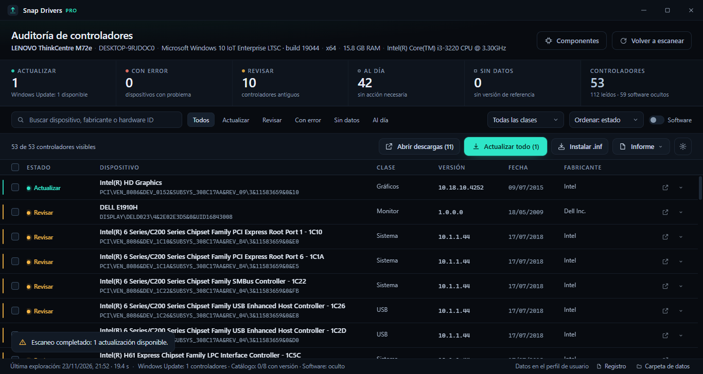
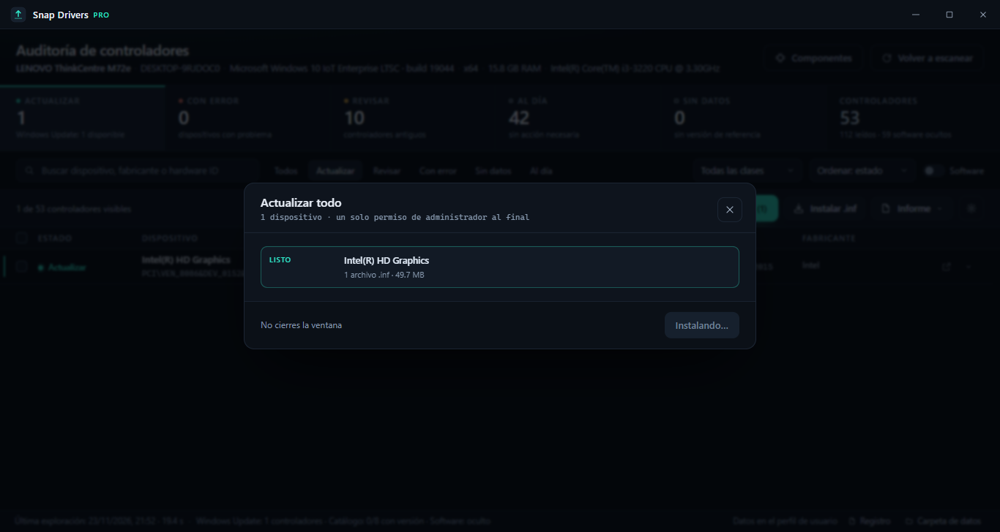
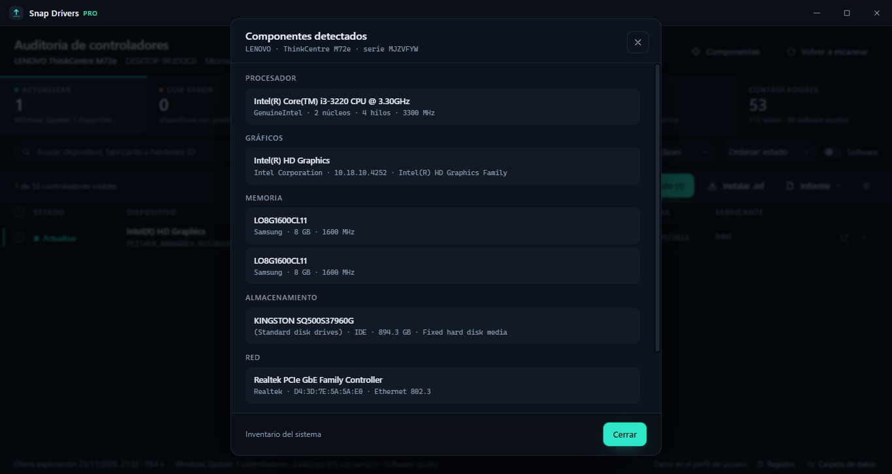

Escaneo completo
Controladores, versión, fecha, firma, INF, hardware IDs y estado PnP, además de dispositivos con error.
Escanea todos los controladores, detecta lo que Windows Update ofrece de verdad y descarga el paquete firmado que Microsoft publica para tu hardware exacto. Todo, con un único permiso.

Compatible con equipos y componentes de


Y también Razer, Samsung, Framework, Corsair, HyperX, Gigabyte, Realtek y más.
Logos de sus propietarios, mostrados solo para indicar compatibilidad.
Sin catálogos inventados ni paquetes de terceros: lo que instala viene de Microsoft o del fabricante que corresponde, y siempre te dice de dónde salió.
Controladores, versión, fecha, firma, INF, hardware IDs y estado PnP, además de dispositivos con error.
Del hardware ID al CAB firmado del Catálogo de Microsoft, con progreso y sin espejos.
Descarga y prepara toda la cola y aplica los paquetes con una única confirmación de Windows.
Chipset, audio y touchpad van al fabricante del equipo; GPU, red y Bluetooth al del chip.
Cada escaneo, descarga e instalación con su código de resultado, exportable a TXT o JSON.
Comprueba GitHub al arrancar y te avisa con la nota de la versión nueva. Un clic y listo.
Capturas reales del programa en un equipo de 2012 con Windows 10: así de claro queda qué está al día y qué no.




Instalador por usuario, sin permisos de administrador para instalar y sin tiendas de terceros. La app se actualiza sola cuando publicamos una versión nueva.
De Windows Update y del Catálogo de Microsoft Update, con la URL que Microsoft devuelve para tu hardware ID. Nada de espejos ni repositorios de terceros.
No. Todo se guarda en la carpeta de la aplicación: ajustes, catálogo, instalaciones y registro.
Instalar un controlador requiere escribir en el almacén de Windows. Se eleva solo esa operación, una vez por lote; el análisis es de solo lectura.
Sí. Al arrancar comprueba las releases del repositorio y, si hay una nueva, te avisa con la nota de la versión y un botón para instalarla.
Puede pasar la primera vez: el ejecutable no está firmado con un certificado comercial. Pulsa «Más información → Ejecutar de todas formas».
Sí. En clases del sistema manda el fabricante del equipo (Legion, ROG, Predator, OMEN, Alienware, MSI…); en GPU y red, el fabricante del chip.